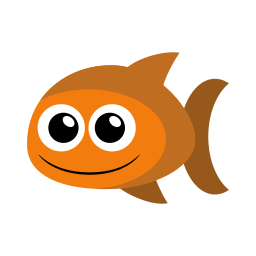
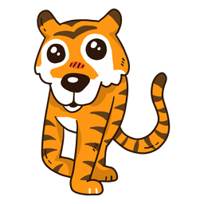

<!DOCTYPE html>
<html>

<head>
  <title>Best of Three Decision-making Game</title>

  <!-- Load libraries -->
  <script src="jspsych-6.3.1/jspsych.js"></script>

  <!-- Load task stimuli and settings -->
  <script src="js/BoT_settings.js"></script>
  <script src="js/BoT_copied_functions.js"></script>
  <script src="js/BoT_stimuli.js"></script>
  <script src="js/BoT_instructions_text.js"></script>
  <script src="js/BoT_build_block.js"></script>
  <script src="js/BoT_practice_timeline.js"></script>

  <!-- Load jsPsych plug-ins -->
  <script src="jspsych-6.3.1/plugins/jspsych-html-keyboard-response.js"></script>
  <script src="jspsych-6.3.1/plugins/jspsych-html-button-response.js"></script>
  <script src="jspsych-6.3.1/plugins/jspsych-preload.js"></script>
  <script src="jspsych-6.3.1/plugins/jspsych-image-keyboard-response.js"></script>
  <script src="jspsych-6.3.1/plugins/jspsych-audio-keyboard-response.js"></script>
  <script src="jspsych-6.3.1/plugins/jspsych-audio-button-response.js"></script>
  <script src="jspsych-6.3.1/plugins/jspsych-fullscreen.js"></script>

  <!-- Load custom plug-ins -->
  <script src="js/jspsych-learning-trial.js"></script>
  <script src="js/jspsych-learning-instructions.js"></script>
  <script src="js/jspsych-comp-q.js"></script>

  <!-- Load CSS styles -->
  <link rel="stylesheet" href="https://cdnjs.cloudflare.com/ajax/libs/animate.css/4.1.1/animate.min.css" />
  <link rel="stylesheet" href="jspsych-6.3.1/css/jspsych.css">
  <link rel="stylesheet" href="css/BoT.css">
  </link>

  <!-- Load pavlovia requirements -->
  <script src="lib/vendors/jquery-2.2.0.min.js"></script>
  <script src="lib/jspsych-pavlovia-3.0.0.js"></script>

  <!-- Get rid of pinterest -->
  <meta name="pinterest" content="nopin" />
  <meta name="pinterest" content="nohover" />
</head>

<body></body>
<script>

  /* create timeline */
  var timeline = [];

  /* DEFINE EACH TRIAL TYPE ----------------------------------- */
  /* init connection with pavlovia.org */
  var pavlovia_init = {
    type: "pavlovia",
    command: "init"
  };

  // end connection with pavlovia.org 
  var pavlovia_finish = {
    type: "pavlovia",
    command: "finish"
  };

  /* define full screen enter */
  var fullscreen_enter = {
    type: 'fullscreen',
    fullscreen_mode: true
  };

  /* preload */
  var preload_audio_test = {
    type: 'preload',
    audio: ["audio/beep_loop.wav", "audio/blank.wav", "audio/shark.wav", "audio/turtle.wav"],
    images: all_images,
    message: "<p> Loading the games. </p> This may take a few minutes. </p> Thank you for your patience! </p>"
  }

  var preload_instructions = {
    type: 'preload',
    audio: audio_instructions,
    images: all_images,
    message: "<p> Loading the games. </p> This may take a few minutes. </p> Thank you for your patience! </p>"
  }

  var preload_compq = {
    type: 'preload',
    audio: comp_quest_audio,
    images: all_images,
    message: "<p> Loading, please wait. </p>"
  }

  /* audio test */
  var beep_test = {
    type: 'audio-keyboard-response',
    stimulus: 'audio/beep_loop.wav',
    choices: jsPsych.ALL_KEYS,
    prompt: 'Make sure your sound is turned on. </p> Then, press the space bar to proceed to the audio test.',
  };

  var audio_test_1 = {
    type: 'audio-button-response',
    stimulus: 'audio/shark.wav',
    choices: ['repeat', 'fish', 'tiger', 'turtle', 'shark'],
    correct_answer: 4,
    prompt: 'Click on the word that you just heard.',
    incorrect_prompt: 'Incorrect, please adjust your volume and try again.',
    margin_vertical: '40px',
    margin_horizontal: '10px',
    button_html: [
      '',
      '',
      '',
      '',
      ''
    ],
    post_trial_gap: 1000
  };


  var audio_test_2 = {
    type: 'audio-button-response',
    stimulus: 'audio/turtle.wav',
    choices: ['repeat', 'turtle', 'shark', 'fish', 'tiger'],
    correct_answer: 1,
    prompt: 'Again, click on the word that you just heard.',
    incorrect_prompt: 'Incorrect, please adjust your volume and try again.',
    margin_vertical: '40px',
    margin_horizontal: '10px',
    button_html: [
      '',
      '',
      '',
      '',
      ''
    ],
    post_trial_gap: 1000
  };

  /* define welcome message trial */
  var welcome_block = {
    type: "html-keyboard-response",
    stimulus: "Welcome to the experiment. Press any key to begin and to advance the instructions."
  };

  /* define fixation */
  var fixation = {
    type: 'html-keyboard-response',
    stimulus: '<div style="font-size:60px;">+</div>',
    choices: jsPsych.NO_KEYS,
    trial_duration: iti_time,
    data: { task_part: 'fixation' }
  }


  /* define comprehension question */
  var comp_question = {
    type: "comp-q",
    audio_stim: jsPsych.timelineVariable('audio_stim'),
    stimulus: jsPsych.timelineVariable('stimulus'),
    choices: ['TRUE', 'FALSE'],
    data: { task_part: 'comp_question' },
    post_trial_gap: 100,
    on_finish: function (data) {
      if (data.button_pressed == jsPsych.timelineVariable('correct_button', true)) {
        data.correct = true;
      } else {
        data.correct = false;
      }
    }
  }

  /* define comprehension answer */
  var comp_answer = {
    type: "comp-q",
    stimulus: function () {
      var last_trial_correct = jsPsych.data.get().last(1).values()[0].correct;
      if (last_trial_correct) {
        return jsPsych.timelineVariable('right_response', true)
      } else {
        return jsPsych.timelineVariable('wrong_response', true)
      }
    },
    audio_stim: function () {
      var last_trial_correct = jsPsych.data.get().last(1).values()[0].correct;
      if (last_trial_correct) {
        return jsPsych.timelineVariable('right_audio', true)
      } else {
        return jsPsych.timelineVariable('wrong_audio', true)
      }
    },
    choices: ['Next'],
    data: { task_part: 'comp_answer' },
    post_trial_gap: 100
  };

  /* define instructions trial */
  var learning_instructions = {
    type: "learning-instructions",
    stimulus: jsPsych.timelineVariable('stimulus'),
    audio_stim: jsPsych.timelineVariable('audio_stim'),
    choices: ['Next'],
    data: { task_part: 'instructions' },
    post_trial_gap: 100
  };

  /* define learning trial */
  var learning_trial = {
    type: "learning-trial",
    stimulus: jsPsych.timelineVariable('stimulus'),
    correct_response: jsPsych.timelineVariable('correct_response'),
    data: jsPsych.timelineVariable('data'),
    choice_images: jsPsych.timelineVariable('choice_images'),
    correct_response: jsPsych.timelineVariable('correct_response'),
    choices: [key1, key2, key3],
    response_ends_trial: false,
    trial_duration: max_choice_time,
    display_selection_time: selection_time,
    stimulus_height: stimulus_height,
    data: jsPsych.timelineVariable('data')
  };

  /* define transition screen */
  var transition_screen = {
    type: "html-button-response",
    stimulus: "<p> Now it's time to play another round. </p>",
    choices: ['Next round.'],
    data: { task_part: 'transition_screen' },
    post_trial_gap: 100
  };

  /* define experiment end screen */
  var experiment_end_screen = {
    type: "html-button-response",
    data: { task_part: 'break' },
    stimulus: function () {
      var trials = jsPsych.data.get().filter({ task_part: 'learning' });
      var task_points_earned = trials.select('points').sum();
      if (task_points_earned <= 0) {
        var bonus_money = 0;
      } else if (task_points_earned < 50) {
        var bonus_money = 1;
      } else if (task_points_earned < 100) {
        var bonus_money = 2;
      } else if (task_points_earned < 200) {
        var bonus_money = 3;
      } else if (task_points_earned < 300) {
        var bonus_money = 4;
      } else {
        var bonus_money = 5;
      };

      var total_payment = base_payment + bonus_money;

      return "<p> Thank you for completing Part 1 of the experiment. </p>" +
        "<p> In total, you earned " + task_points_earned + " points. </p>" +
        "<p> That means you earned a bonus payment of $" + bonus_money + ". </p>" +
        "<p> Your total payment for Part 1 is $" + total_payment + ". </p>" +
        "<p> You will receive your full payment once you complete Part 2. </p> " +
        "<p> Make sure you participate in Part 2 next week! </p>"
    },
    choices: ['Click here to complete the experiment.']
  };

  /////////////////////
  // PRACTICE BLOCK // 
  ////////////////////

  /* practice instructions */
  var practice_instructions = {
    timeline: [learning_instructions],
    timeline_variables: practice_text_1,
    randomize_order: false
  }

  /* practice trials */
  var practice_trials = {
    timeline: [fixation, learning_trial],
    timeline_variables: practice_stim,
    sample: {
      type: 'fixed-repetitions',
      size: num_prac_repetitions
    },
  }

  /* practice end screen */
  var practice_end = {
    type: "html-button-response",
    data: { task_part: 'break' },
    stimulus: function () {
      var trials = jsPsych.data.get().filter({ task_part: 'practice', task_block: 'practice' });
      var total_practice_points = trials.select('points').sum();

      return "<p> You earned " + total_practice_points + " points in the practice round! </p>";
  },
    choices: ['Next']
  };

  /* practice instructions 2*/
  var practice_instructions_2 = {
    timeline: [learning_instructions],
    timeline_variables: practice_text_2,
    randomize_order: false
  }

  /* comprehension questions */
  var comp_questions = {
    timeline: [comp_question, comp_answer],
    timeline_variables: comp_question_text,
    randomize_order: false
  }

  /* real start*/
  var real_start = {
    timeline: [learning_instructions],
    timeline_variables: real_start_text,
    randomize_order: false
  }

  /* build practice block */
  var practice_block = {
    timeline: [practice_instructions, practice_start, practice_trials, practice_end, practice_instructions_2, preload_compq, comp_questions, real_start]
  }

  ////////////////////////////////////////
  // CREATE TIMELINE AND RUN EXPERIMENT //
  ////////////////////////////////////////

  // initialize 
  timeline.push(pavlovia_init);
  timeline.push(fullscreen_enter)

  // audio test
  timeline.push(preload_audio_test);
  timeline.push(beep_test);
  timeline.push(audio_test_1);
  timeline.push(audio_test_2);

  // welcome
  timeline.push(preload_instructions);
  timeline.push(welcome_block);

  // instructions & practice
  timeline.push(practice_block);

  // real learning blocks in random order
  build_block(0);
  timeline.push(transition_screen);
  build_block(1);
  timeline.push(transition_screen);
  build_block(2);
  timeline.push(transition_screen);
  build_block(3);
  timeline.push(transition_screen);
  build_block(4);
  timeline.push(transition_screen);
  build_block(5);
  timeline.push(pavlovia_finish); 
  timeline.push(experiment_end_screen);

  /** GET SUB ID BASED ON URL **/
  var file_name = 'mem_spec_p1_' + urlvar.subject_ID + '_' + getFormattedTime();

  /* generate qualtrics link. Note: this has been modified in the shared code to just go to our lab website */ 
  var final_qualtrics = 'https://hartleylab.org';

  /* start and end the experiment */
  jsPsych.init({
    timeline: timeline,
    on_trial_start: function (data) {
      jsPsych.data.get().addToAll({ subject_id: urlvar.subject_ID })
      jsPsych.data.get().addToAll({ condition: condition })
      jsPsych.data.get().addToAll({ task_version: 1 })
      var interaction_data = jsPsych.data.getInteractionData();
      var blur_events = interaction_data.filter({ event: 'blur' });
      var focus_events = interaction_data.filter({ event: 'focus' });
      var fullscreenenter_events = interaction_data.filter({ event: 'fullscreenenter' });
      var fullscreenexit_events = interaction_data.filter({ event: 'fullscreenexit' });
      jsPsych.data.get().addToLast({ interactions: interaction_data.csv() });
      jsPsych.data.get().addToLast({ blur_events: blur_events.csv() });
      jsPsych.data.get().addToLast({ focus_events: focus_events.csv() });
      jsPsych.data.get().addToLast({ fullscreenenter_events: fullscreenenter_events.csv() });
      jsPsych.data.get().addToLast({ fullscreenexit_events: fullscreenexit_events.csv() });
    },
    on_interaction_data_update: function (data) {
      var interaction_data = jsPsych.data.getInteractionData();
      var blur_events = interaction_data.filter({ event: 'blur' });
      var focus_events = interaction_data.filter({ event: 'focus' });
      var fullscreenenter_events = interaction_data.filter({ event: 'fullscreenenter' });
      var fullscreenexit_events = interaction_data.filter({ event: 'fullscreenexit' });
      jsPsych.data.get().addToLast({ interactions: interaction_data.csv() });
      jsPsych.data.get().addToLast({ blur_events: blur_events.csv() });
      jsPsych.data.get().addToLast({ focus_events: focus_events.csv() });
      jsPsych.data.get().addToLast({ fullscreenenter_events: fullscreenenter_events.csv() });
      jsPsych.data.get().addToLast({ fullscreenexit_events: fullscreenexit_events.csv() });
    },
    on_finish: function () {
      //jsPsych.data.get().localSave('csv', file_name);
      document.body.innerHTML = '<p> <center> Please wait while your data saves. You will be redirected in 10 seconds.  </center> </p>'
      setTimeout(function () { location.href = final_qualtrics }, 10000)
    }
  });
</script>

</html>